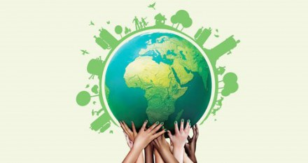

Bienvenido a Mundo Sostenible
La asociación "Mundo Sostenible" se dedica a promover prácticas y valores que contribuyen al cuidado del medio ambiente y al bienestar de las comunidades. Nuestra misión es impulsar la conciencia ambiental mediante programas educativos, proyectos de conservación y el fomento de un estilo de vida sostenible.
Colaboramos estrechamente con comunidades locales, empresas comprometidas y entidades gubernamentales para generar un impacto positivo, promoviendo la protección de la biodiversidad, el uso responsable de recursos y el desarrollo de iniciativas que preserven nuestro planeta para las generaciones futuras. Juntos, trabajamos hacia un mundo más equitativo, saludable y sostenible para todos.

Objetivos:
- Promover la educación ambiental: Desarrollar programas educativos, talleres y actividades para concienciar a la comunidad sobre la importancia de la sostenibilidad, el cambio climático, la conservación de recursos naturales y prácticas sostenibles.
- Impulsar proyectos de conservación: Colaborar con comunidades locales, autoridades y organizaciones para llevar a cabo proyectos de conservación, como la reforestación, la preservación de hábitats naturales y la protección de especies en peligro de extinción.
- Fomentar el consumo responsable: Informar y motivar a la sociedad sobre la importancia de adoptar hábitos de consumo responsables, apoyando iniciativas de economía circular, reducción de residuos y la utilización de energías renovables.
- Apoyar iniciativas locales sostenibles: Establecer alianzas con emprendedores y negocios locales comprometidos con prácticas sostenibles, ofreciendo asesoramiento, visibilidad y apoyo para el desarrollo y crecimiento de sus proyectos.